Вегетативное размножение – размножение с помощью клеток вегетативных органов (корни, стебли, листья). По своей сути является клонированием: наследственный материал потомков идентичен наследственному материалу родительского организма.
Половое размножение – размножение с помощью специализированных половых клеток, при котором происходит комбинация наследственных признаков.
Клетки меристемы способны к делению, а клетки паренхимы способны к дедифференциации – утрате своей специализации. Из такой клетки может образоваться практически любая клетка растительного организма (см. Рис. 1). Так, из паренхимы могут образоваться клетки корня.
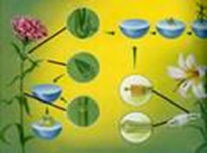
Рис. 1. Образование растительного организма
У мхов из споры прорастает протонема (см. Рис. 2), которая дает почки, из которых затем прорастает целое растение мха. Вегетативное размножение – обязательный элемент жизненного цикла мхов.
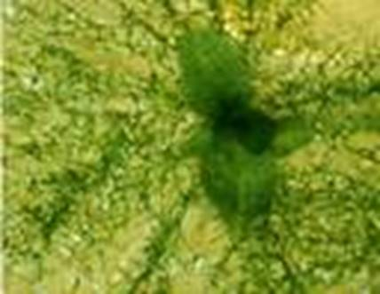
Рис. 2. Протонема
Плауновидные для вегетативного размножения могут иметь клубеньки и выводковые почки. Но чаще всего взрослый разветвленный стебель распадается на несколько новых.
Хвощи имеют ветвящееся подземное корневище, от которого отрастают новые побеги. Со временем связь между побегами утрачивается. Иногда новые побеги могут отрастать от основания крупных стеблей.
Папоротники обладают длинными корневищами, от которых отходят новые побеги. При основаниях стеблей папоротников с короткими корневищами (страусник) могут образовываться короткие розетки. Некоторые папоротники по краям листьев имеют выводковые почки (асплениум (см. Рис. 3)).
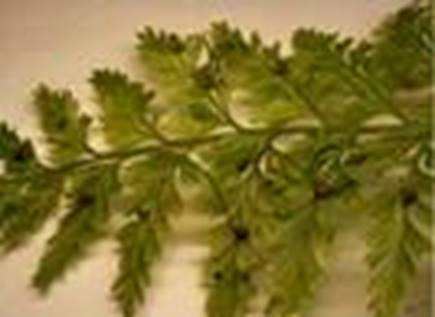
Рис. 3. Выводковые почки асплениума
Голосеменные растения размножаются отводками (сосна, тис), черенками (кипарис).
У некоторых растений образуются корневые отпрыски (осина, тополь, сирень, малина). Со временем их старые участки корней разрушаются, и отпрыски становятся самостоятельными растениями.
Усы – ползучие побеги, отрастающие от материнского растения. Из них развиваются новые самостоятельные растения (земляника, ежевика, клюква (см. Рис. 4)).
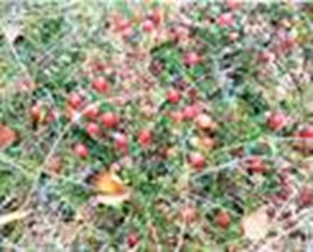
Рис. 4. Клюква
Пырей (см. Рис. 5), подмаренник, вьюнок способны размножаться при помощи корневищ.
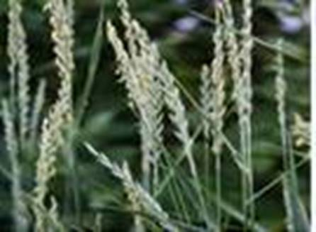
Рис. 5. Пырей
Корневищами размножают ирисы, пионы, ландыши.
Клубнями размножают картофель и топинамбур (см. Рис. 6).
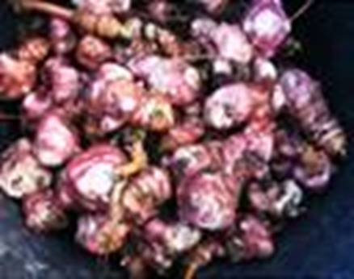
Рис. 6. Клубни топинамбура
Луковицами размножают лук, тюльпаны (см. Рис. 7), нарциссы и лилии. Луковицы способны к образованию луковиц – деток.
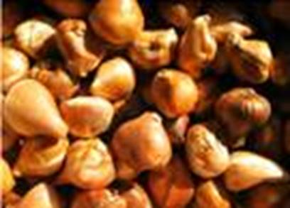
Рис. 7. Луковицы тюльпанов
На листьях каланхоэ (см. Рис. 8) образуются выводковые почки, которые дают начало новым растениям.
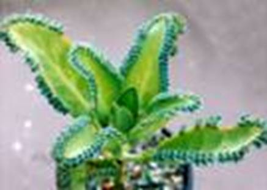
Рис. 8. Каланхоэ
Вегетативное размножение способствует быстрому расселению растений, получению большого числа генетически идентичных особей. Иногда семенное размножение затруднено, в таком случае растения размножаются только вегетативно. Для некоторых видов (виноград без косточек) семенное размножение невозможно.
Черенок – отрезок любого вегетативного органа (см. Рис. 9).
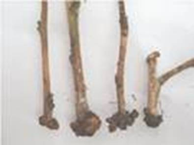
Рис. 9. Черенки
Черенкование также встречается в природе, при ледоходе обломки веток ив могут попасть во влажную почву и так прорасти.
Такая способность используется в садоводстве. Стеблевой черенок – отрезок стебля с несколькими почками. Так размножают смородину, розы, декоративные сорта ив, флоксы, бальзамин (см. Рис. 10). Для этого весной, до распускания почек, черенки садят в подготовленную почву. К осени появляются придаточные корни. Тогда черенки выкапывают и сажают на постоянное место.
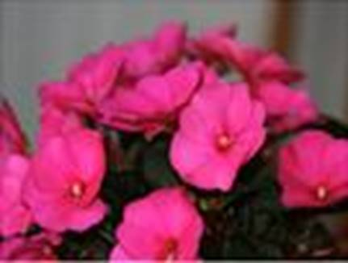
Рис. 10. Бальзамин
Также в сельском хозяйстве используют корневые черенки.
Корневой черенок – отрезок корня длиной 15-25 см. С их помощью способны размножаться только те растения, которые могут на корнях образовывать придаточные почки. На посаженном в почву черенке развиваются надземные побеги, у основания которых образуются придаточные корни. Так размножают садовую малину, шиповник (см. Рис. 11), яблони, одуванчик.
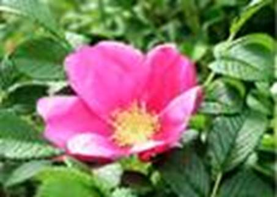
Рис. 11. Шиповник
Бегонию, сенполию (см. Рис. 12), фиалки размножают листовыми черенками. Для размножения достаточно фрагмента листа с жилкой.
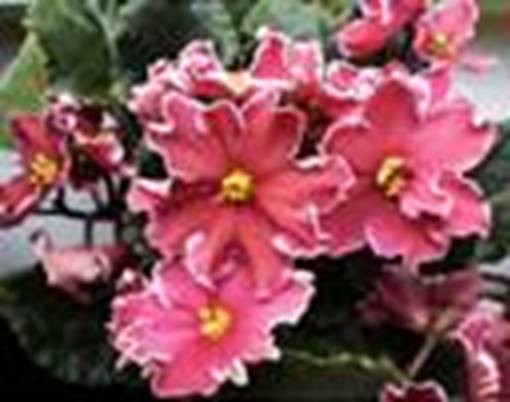
Рис. 12. Сенполия
Смородину, крыжовник, калину можно размножать отводками (см. Рис. 13). Для этого побег пригибают так, чтобы его средняя часть касалась земли, а верхушка была направлена вверх. Так образуются придаточные корни, и побег можно отделить от материнского организма.
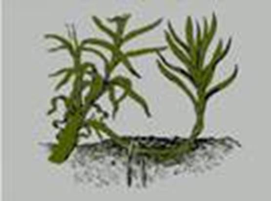
Рис. 13. Размножение отводками
Прививка – искусственное сращивание части одного растения с побегом другого.
Дичок – молодое растение, выращенное из семени плодового дерева. К нему прививают культурное растение. Это подвой.
Черенок культурного растения, который прививают, – привой.
При правильно проведенной прививке происходит срастание привоя с подвоем, и почки привоя распускаются.
Копулирование – вид прививки, при которой привой и подвой одинаковой толщины.
Для прививки почкой летом с культурного дерева срезают однолетний побег. Его вставляют в разрез коры дичка. При правильно проведенной манипуляции через 2 недели привой срастется с подвоем. А на следующий год из привитой почки развивается побег.
Ствол дичка выше места прививки полностью срезают. А из привоя образуется крона сортового растения.
Размножение культурой ткани (меристемное размножение) (см. Рис. 14). Выращивание новых растений из клеток образовательной ткани материнского растения.
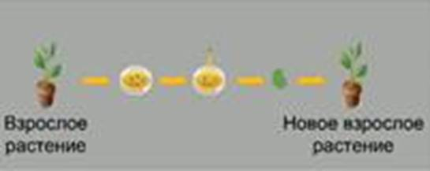
Рис. 14. Меристемное размножение
Некоторые растения размножают делением куста (флокс, щавель, мята, эхинацея).
Попробуйте размножить комнатные растения черенками. Для этого срежьте стеблевые черенки с 3-4 листьями колеуса, гибискуса и традесканции. Нижние 2 листа удалите. Поставьте черенки в воду так, чтоб нижний узел был под водой. Поставьте в светлое место. Раз в 3-4 дня меняйте воду. По достижении придаточными корнями 2 см посадите черенки в горшки. Накройте растения стеклянным куполом до полного развития корневой системы и начала роста почек. Запишите в дневник результаты наблюдений.
В специальных камерах с определенными условиями находятся объемы с культурой клеток образовательной ткани. Клетки делятся и образуют новые растения.
В питательные среды по очереди добавляются растворы растительных гормонов, чем провоцируется рост определенных частей растения. Так размножают орхидеи, герберы, женьшень.
Среда стерильна, поэтому посадочный материал не заражен.
С 1 га земляники за год можно получить до 250 000 усов – количество, достаточное для засадки 5 га.
Элодея канадская (водяная чума) в Европе впервые появилась в середине XIX века. Из Америки попали только женские особи. Но элодея размножается природным черенкованием.
При уничтожении бодяка, осота их отпрыски могут появиться с глубины более 1 метра. Их корни могут выделять вещества, снижающие всхожесть и темпы роста культурных растений.
Список литературы
1. Биология. Бактерии, грибы, растения. 6 кл.: учеб. для общеобразоват. учреждений / В.В. Пасечник. – 14-е изд., стереотип. – М.: Дрофа, 2011. – 304 с.: ил.
2. Тихонова Е.Т., Романова Н.И. Биология, 6. – М.: Русское слово.
3. Исаева Т.А., Романова Н.И. Биология, 6. – М.: Русское слово.
Дополнительные рекомендованные ссылки на ресурсы сети Интернет
1. Scienceland.info (Источник).
2. Mgudt.com (Источник).
3. Valleyflora.ru (Источник).
Домашнее задание
1. Биология. Бактерии, грибы, растения. 6 кл.: учеб. для общеобразоват. учреждений / В.В. Пасечник. – 14-е изд., стереотип. – М.: Дрофа, 2011. – 304 с.: ил. – с. 207, задания и вопрос 1,5 (Источник).
2. Что такое меристемное размножение?
3. Как производится размножение прививками?
4. * Подумайте, какие отличия вы можете назвать между половым и вегетативным размножением растений? У какого размножения, на ваш взгляд, больше достоинств для применения в сельском хозяйстве? Каких?